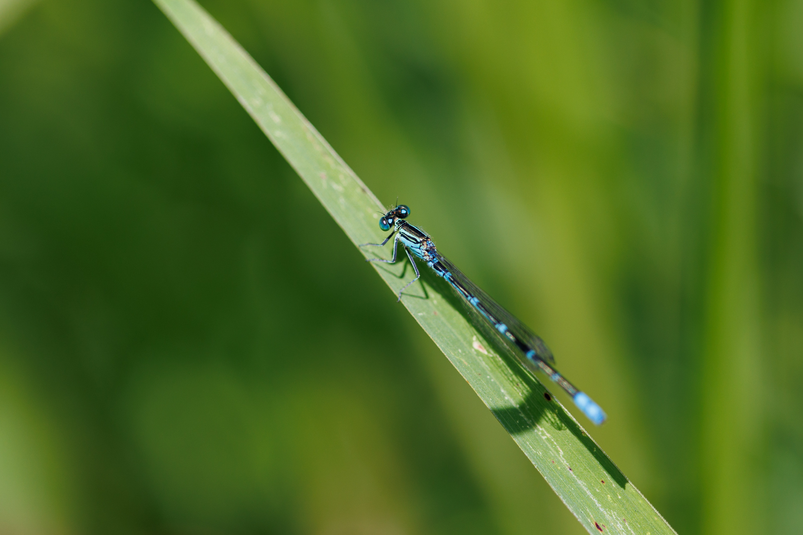

絶滅危惧種，オオモノサシトンボ
本日は，オオモノサシトンボとアオヤンマの撮影を目的に出かける．現地到着後，池の周囲を歩き始める．早速，ヨシの足元付近を飛んでいるオオモノサシトンボの雄がいた．しかし，止まる様子がなく，だんだん離れていってしまう．再度，別のヨシの周辺を探索する．すると，大きめの赤みかかったイトトンボが飛んでいる．オオモノサシトンボの雌だ．しかも，おとなしい様子．おおむね撮影に満足し，アオヤンマを探し始める．すると，ヨシの中をかき分けるようにゆっくり飛ぶトンボがいる．アオヤンマである．たまに，ヨシから出てくるところが撮影のチャンスであるが，行動パターンが掴めず，飛翔撮影を行うのは困難を極めていた．今日は，時間制限があったため，オオモノサシトンボの撮影に時間をかけることにした．次回来る時は，アオヤンマだけに集中して撮影したい．

2022年5月22日 オオモノサシトンボ ♀ 埼玉県
Canon EOS R6, EF100mm F2.8L Macro IS USM, 1/200, F2.8, ISO 100

2022年5月22日 セスジイトトンボ ♂ 埼玉県
Canon EOS R6, EF100mm F2.8L Macro IS USM, 1/320, F2.8, ISO 100